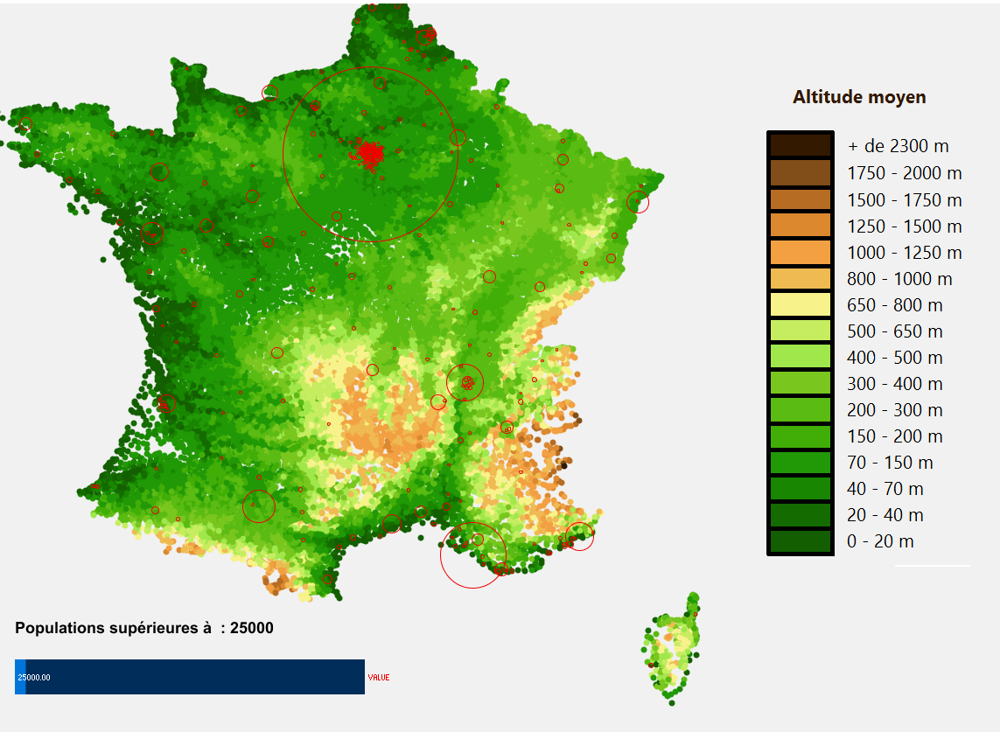
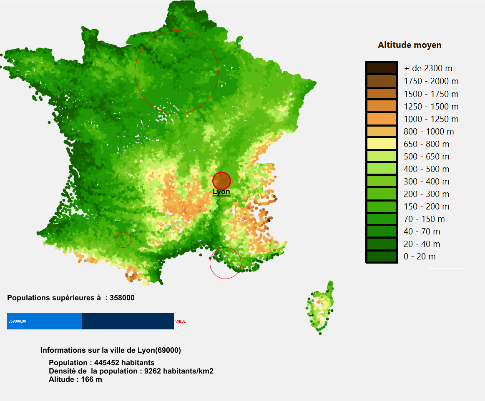

Sur la carte, j'ai choisi d'afficher l'altitude et la population de certains villes. Nous avons en bas un slider permettant de selectionner les villes avec une population supérieurs à un seul choisi par l'utilisateur.Dans le cas de l'image ci-dessus, nous avons affiché les villes avec une population supérieur à 25 000 habitants.
A droite de l'écran, nous avons la légende de l'alitude moyen pour les villes représentées sur la carte.

Lorsqu'on pose le curseur de la souris à l'interieur d'un cercle, le contour du cercle augmente et le cercle est rempli avec une certaine transparence pour garder l'information d'altitude des villes voisines. Il y a aussi le nom de la ville qui s'affiche.
Dans le cas de la carte ci-dessus, l'utilisateur a aussi cliqué dans le cercle. Par cette action, il peut avoir des informations sur la ville présente en dessous du slider.